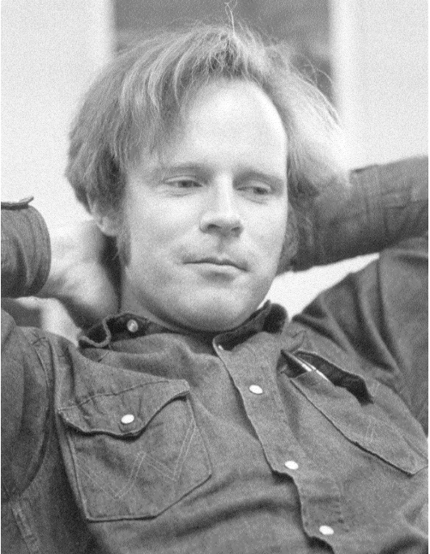

纪念罗伯特 W 弗洛伊德
唐纳德 E 克努斯，斯坦福大学
没有人对我的科学生活影响比我的鲍勃·弗洛伊德更多。如果不是他，我可能永远不会成为计算机科学家。在这篇文章中，我将尝试解释这些陈述背后的原因，并捕捉一些旧时计算机科学的精神。我将不是尝试仅用我记得的事件来重建过去，而是会大量引用当时实际写成的文件。下面的评论摘自我在2002年3月20日对斯坦福计算机论坛的一个一小时主题演讲；许多更多的细节，包括原始文件的图像，可以在那次讲座的视频录像中看到，该录像已经被斯坦福的专业发展中心永久存档在互联网上[scpd.stanford.edu]。正如在那次演讲中一样，我并不打算给出一个传统的传记，平衡地记述鲍勃的童年、教育、家庭生活、职业生涯和外部兴趣；我相信，准备这样一个账户的有趣任务不久将由比我更有资格的专业历史学家承担。我的目标是提供一种个人视角。我第一次接触弗洛伊德的工作可以追溯到1962年，当时《计算评论》要求我评估他的文章《符号操作的描述性语言》[《计算机协会杂志》8（1961年），579-584页]。那时我是加州理工学院的二年级研究生，学习数学；他在芝加哥的阿穆尔研究基金会担任程序分析员。由于我最近完成了一个ALGOL子集的编译器，并且阅读了其他几个编译器的文档和源代码列表，所以我对他所写的东西印象深刻[见《计算评论》3（1962年），148页，评论#2140]：“这篇文章是自动编程领域的一个重大进步。在过去的几年中，许多人独立发现了分析算术表达式的简单算法。但是，传统的解释这些算法的方法掩盖了基本事实。弗洛伊德开发了一种新的符号，让树木从森林中脱颖而出，并且非常好地指出了翻译过程中真正发生的事情。一个代数编译器可以用这种符号非常精确和紧凑地描述，并且可以在几个小时内以弗洛伊德的形式设计出来。”本质上，鲍勃引入了产生式作为编程的组织原则，这在一定程度上预示了所谓专家系统的未来发展。
我的编程工作仅仅是我可以通过它支付大学教育费用和准备成家的副业。1962年夏天，我为一台小型UNIVAC计算机编写了一个FORTRAN编译器；这项工作与我视为未来职业的数学教师几乎没有联系，除了我确实花了一天时间研究“线性探测”（我的编译器用来维护符号字典的简单哈希表算法）的效率。我从未听说过“计算机科学”。然而，当我在那个夏天末的ACM会议上第一次亲自见到鲍勃时，我的态度完全改变了。我们很快就成为了朋友，也许是因为我们都是在1950年代末通过坐在IBM 650计算机的控制台上学习编程的。鲍勃向我展示了他一直在做的一些工作，关于验证程序正确性的数学技术——据我所知，这在当时是一个完全闻所未闻的想法。程序构建的公认方法恰恰相反：人们会编写代码并进行测试运行，然后发现错误并进行补丁，然后发现更多的错误并进行更多的补丁，如此反复，直到无法发现更多的错误，但总是担心第二天会出现新的案例。
我们从未意识到可能有一种方法来构建一个严格的有效性证明；至少，我确信当我编写程序时，这样的想法从未出现在我的脑海中，尽管我在课堂上一直在做证明。我认为编程是完全不同的人类活动类别。Goldstine和von Neumann的早期论文提供了数学程序开发的一瞥，早已被遗忘。我也不知道John McCarthy的论文《走向计算的数学科学》，那年夏天在慕尼黑的IFIP大会上提出，也没有将McCarthy风格的递归函数与“真正的”编程联系起来。但是鲍勃教会了我同时戴上程序员的帽子和数学家的披风。传统上，计算机程序通过绘制流程图来“解释”，以说明基本步骤的可能序列。鲍勃的证明方法基于在流程图的每个分支上装饰一个不变断言，例如“R ≥ Y > 0, X ≥ 0, Q ≥ 0, X = R + QY”，这捕捉了在计算的这一点上变量之间保持的基本关系。如果我们能够展示每个步骤后立即跟随的断言是前一步骤断言的直接结果，我们可以确信，如果程序开始时适当的断言是真实的，那么程序末尾的断言将成立。当然，这在被制定之后是一个简单的原则，但它戏剧性地开阔了我的视野。当鲍勃后来发表它时[“给程序赋予意义”，应用数学研讨会19（1967年），19-32页]，他归功于Alan Perlis和Saul Gorn的未发表思想，但我确信他已经独立地发展了一切。他的论文提出了一种流程图的形式语法，以及用于验证基本操作（如赋值和测试）效果的严格方法；因此它是Tony Hoare后来发展的“前置条件”和“后置条件”的直接前身。我们开始来回写信。例如，在一封信中，我提到我一直在尝试但没有成功地找到一个系统性的方法来决定给定的上下文无关文法是否是模糊的，即使是在简单的情况
⟨𝐴⟩::=⟨𝑥⟩∣⟨𝐴⟩⟨𝑥⟩⟨A⟩::=⟨x⟩∣⟨A⟩⟨x⟩其中 ⟨𝑥⟩
⟨x⟩ 是一个有限的字符串集合。他在1963年10月16日回复——使用他当时雇主马萨诸塞州韦克菲尔德计算机联合公司的信纸——如下：“我为你在TTL上的成果鼓掌[那些是什么……我忘了]；但见Greibach，‘最小线性文法的模糊问题不可判定性’，信息与控制，1963年6月，第119页。同一期刊上的Landweber的论文也很有趣。”然后他继续提出了一个算法，解决了我提到的简单案例。我们后来都了解到，他由此重新发现了Sardinas和Patterson在编码理论中众所周知的方法[August A. Sardinas和George W. Patterson，“唯一分解编码消息的必要和充分条件”，IRE公约记录，1953年全国公约，第8部分：信息论（1953年），104-108页]。1963年底，鲍勃来加州理工学院拜访我，乘飞机带来了新鲜的缅因州龙虾。我们花了几天时间在约书亚树国家纪念碑徒步旅行，一边走一边谈论算法和语言。（他喜欢户外活动，几年后我们还在科伊州立公园一起徒步旅行。）当时我正准备起草《计算机程序设计艺术》（TAOCP）中关于排序的章节。不久之后，我有机会去波士顿，在那里我拜访了他在马萨诸塞州托普斯菲尔德的美丽新家。我们讨论了我刚刚了解到的一些新的排序思想，特别是J. W. J. Williams的“堆排序”算法[即将在《计算机协会通信》7（1964年），347-348页上发表；我是审稿人]。鲍勃回应说，他改进了该过程的初始化阶段[《计算机协会通信》7（1964年），701页]。我也在那时向他介绍了排序网络的概念，即R. C. Bose和R. J. Nelson[“一个排序问题”，《计算机协会杂志》9（1962年），282-296页]引入的排序方法。在我访问后不久，鲍勃在1964年2月5日给我写了一封信，首先讨论了一个随机排列中最长递减子序列的预期长度。然后他说：“关于你向我们展示的排序系统，我发现任何通过交换相邻行来进行排序的排序过程，如果它能够正确排序一个处于逆序（递减）顺序的输入，那么它就能正确排序所有输入。”这个优雅的结果和他的证明引理最终成为了TAOCP的练习5.3.4-36。他以这样的话结束了他的信：“这是你想要我找到的定理吗？再问我一个。”Bose和Nelson曾推测他们构建的排序网络是最优的，具有最少数量的比较器。Thomas N. Hibbard[“一个简单的排序算法”，《计算机协会杂志》10（1963年），142-150页]为他们的观点提供了支持。但是鲍勃在了解了这个问题后不久就找到了改进的方法，首先将排序21个元素所需的比较交换模块数量从118减少到117，然后（在3月27日）展示了9个元素可以用25个模块而不是27个模块进行排序。这个惊人的突破是一系列令人兴奋的信件交流的开始。4月4日我回信说：“亲爱的鲍勃，我对你上周寄给我的例子印象深刻，甚至感到敬畏等等，你展示了固定比较排序中九个元素的两个步骤改进……因此，我从写书的工作中又失去了一天，因为我重新思考了这个问题。这里是我今天得到的一些结果；我希望你检查它们的准确性，我也希望你受到启发，找到更大更好的改进……我想我可以打破nlog2 3 - n的障碍，在我的n=16的算法中。（这有点令人吃惊，因为二的剌是Bose-Nelson排序的最佳情况）。……”鲍勃在4月10日回复：“非常漂亮！现在推广到三维图……”我们继续就这个问题交换了几十封信，关于排序的有效网络。每当我收到鲍勃的邮件，我都会得知他在我们友好的竞争中领先了；然后轮到我再次暂停TAOCP，试图超越他的最新发现。我们这种非正式的远程纯研究游戏让我们体验到了古代数学家在类似情况下必须感受到的兴奋，就像莱布尼茨与伯努利家族通信，或者欧拉和哥德巴赫交换信件时一样。然而，当我们最终在1973年发表这项工作的结果[“Bose-Nelson排序问题”，载于J. N. Srivastava编辑的《组合理论综述》（阿姆斯特丹：北荷兰，1973年），163-172页]时，我们得知Kenneth E. Batcher已经通过找到一个更好的构造方法，把我们的主要定理吹走了。所有这些都是我们主要研究的附带内容，当时我们的研究重点是将像ALGOL这样的人工语言翻译成机器语言。的确，那时候所有的计算机科学研究大致可以分为三部分：(1) 数值分析或(2) 人工智能或(3) 编程语言。1963年，鲍勃写了一篇精彩的论文，“句法分析和运算符优先级”[《计算机协会杂志》10（1963年），316-333页]，在其中他提出了一种重要的新方法来处理解析问题，这是第一个具有实际重要性的语法导向算法。他在1964年又发表了一篇更加精彩的作品，“编程语言的语法——一项调查”[《电子计算机IEEE交易》EC-13（1964年），346-353页]，这可能是关于该主题写过的最好的论文。在这项调查中，他巧妙地将编译器输入阶段人们使用的各种方法中的混乱带入了秩序，但更重要的是，他引入了一个具有全新控制结构的全新算法。他在这篇论文中用一个隐喻来介绍这种方法：“假设一个人被分配了分析已知语法的PSL（短语结构语言，即上下文无关语言）句子的目标。他有权力雇佣下属，分配任务，并在他们失败时解雇他们；他们反过来也有同样的权力……每个人都将被告知一次‘尝试找到一个G’，其中G是语言的符号，并且如果找到的特定实例G被上级不满意，他可能会反复被告知‘再试一次’。”我认为他在这篇论文中提出的算法可以被公正地视为我们现在所说的面向对象编程的诞生。1964年底，我几乎完成了TAOCP的第10章的起草工作，该章节是关于句法分析的，我给鲍勃写了一封长信，试图解释从这项工作中出现的通用方法（现在被称为LR(k)解析）。“我必须为我的构造的复杂性道歉（事实上，它太复杂了，不能放在我的书里），但这似乎是问题固有的。我知道至少有三篇博士论文完全关注这个问题的最简单情况的部分！当我进一步深入第10章时，我越来越确信，只有五篇真正有价值的关于扫描技术的论文曾经被写过，而你是这五篇论文的所有作者！”鲍勃在1965年秋季成为卡内基技术研究所的计算机科学副教授，除了其他事情外，他开设了一门关于“伟大算法”的课程，并指导了Zohar Manna（
1968年）、Jay Earley（1968年）和Jim King（1969年）的博士论文。他还在这个时期写了另一篇重要论文，“非确定性算法”[《计算机协会杂志》14（1967年），636-655页]，以一种新颖而清晰的通用搜索一般原则的方式，这导致了许多实际实现。我在文件中发现了一个我在1967年6月写给Myrtle Kellington的信，敦促她让这篇论文的插图由打印机排版，而不是使用更便宜的“Leroy手写”替代品。我辩称，“弗洛伊德的文章，也许比我见过的任何其他文章更依赖于与文本协调的插图……。说他应该自己准备图表，在这种情况下，就像告诉我们的作者，除非他们提交手写副本，否则永远不要使用任何数学公式……。弗洛伊德教授多年来一直是我们ACM出版物中最好和最忠实的审稿人之一，他已经自愿将他宝贵的时间投入到这个常常不受欢迎的工作中。现在他是JACM的副主编。我们当然欠他的论文一个体面的待遇。”我很高兴她同意了，尽管她在出版截止日期过去两周多后才收到我的信。与此同时，我的出版商和我已经要求鲍勃对即将在1967年付印的TAOCP第一卷进行详细评论。不用说，他的评论对我而言是非常宝贵的，尽管我并不完全同意他的每一条意见。以下是他写的内容摘录：“第1章：总体看法。我喜欢这一章，但我认为它可以通过砍掉大部分幽默和轶事来改进，保留历史材料……。问题评级系统低估了它们的难度，比如说，对于大学高年级学生，并指定了太多带有‘*’的。作者的个人建议笔记等有时很有价值；不过，非技术材料有时有点过于厚重。技术内容达到了非常高的学术标准，是作者的荣誉。”然后他为文本改进提供了数百条详细建议。我们的通信并不完全是技术性的。1967年2月22日，我写道：“鲍勃，我感觉这将是一封有些特别的信。在过去的一年左右，我收到了很多其他大学的聘书。我告诉你（并且已经计划了很长时间），我打算决定一个永久的居住地，在那里我将度过余生，并在我在普林斯顿为政府工作一年后搬过去。（即，1969年9月搬过去）。由于计算机科学目前的供需状况，我很幸运能够几乎选择任何我想去的地方；但是有几个好地方，决定我应该做什么是一个相当大的难题。我相信现在在我心中最重要的是斯坦福、康奈尔、哈佛和加州理工学院（按这个顺序）。我预计在我做出决定之前需要大约一年的时间，并且有Jill的帮助。我想我非常希望和你在同一个地方，如果可行的话；无论如何，你的计划在我尝试优化的非线性函数中占有一个不可忽视的位置！……所以我很想和你探讨这些可能性……”鲍勃用他自己对各大学当前状况的看法回应；他回答的底线是，“我想说如果你想搬家，我没有计划会冲突，我很可能会被诱惑去斯坦福；事实上，我可能会去。”一年后，我收到并接受了斯坦福的邀请，1968年3月，斯坦福系主任George Forsythe要求我为鲍勃写一封推荐信。我回答说，“我不知道还有谁我会更高度推荐。他是我见过的在他的‘年龄组’中最有天赋的人。他的几篇已发表论文已成为计算机发展中的重要里程碑，特别是他引入了优先级语法、树排序算法和‘给程序赋予意义’的方法。我也很高兴与他有五年的频繁通信，所以我对他的未发表论文也很熟悉；这封信涵盖了各种主题，例如图论、半群中的字问题、数学符号、句法分析算法、关于语言的定理、数据结构操作算法、最优排序方案等。当我编辑ACM通信和杂志时，我请他为几篇论文担任审稿人，他提交的四页或五页的审稿通常包含重要的改进建议。他在卡内基技术学院与本科生和研究生的合作也有很好的记录：他指导了一些优秀的论文，并保持了几个学生项目的进行。他是少数在编写计算机程序和开发与编程相关的有用理论方面都具有相当经验和专业知识的人……他是一个真正的计算机科学家！他的特别才能似乎是(a) 设计巧妙的算法和组合构造；(b) 开发非平凡的新理论，这些理论既具有实际意义，也具有数学兴趣；(c) 组织大量松散相关材料并把握重要思想的能力；(d) 良好的表达才能和找到恰当词汇表达思想的才能。他唯一的已知缺点是他有时过于敏感（过于完美主义）；例如，尽管他在东部生活了将近一生，他已经决定除了B. V. Beaujolais之外，没有加利福尼亚葡萄酒值得喝……鉴于当代的‘社会标准’，还有一点需要说明。弗洛伊德从未经历过获得博士学位的正式程序。我相信这主要是因为他在芝加哥大学进入研究生院时只有16或17岁，作为实验性的加速教育计划的一部分；这个年龄还不够成熟来进行研究生工作。[鲍勃出生于1936年6月8日，在1953年17岁时获得了学士学位——比当时的美国学生早大约五年。]当然，他现在已经写了至少十二篇论文，每篇都比我在计算机科学中见过的任何博士论文都要好，所以他从未正式获得学位这一事实应该是完全无关紧要的。”（鲍勃过去常说他计划通过“绿色邮票方法”获得博士学位，即通过保存寄给他的‘弗洛伊德博士’的信封。在收集了500个这样的信封后，他沉思道，亚利桑那州的某个大学可能会授予他一个学位。）令我高兴的是，鲍勃确实收到了并接受了斯坦福的邀请，他在1968年夏天到达。当我引用推荐信时，我可能还会继续写我后来被要求写的两封信。第一封信是在1974年2月12日写给美国艺术与科学院的：“……很难将[计算机科学家]与数学家、物理学家等进行排名，因为计算机科学还太年轻。像Lehmer或Polya这样的数学家已经持续生产高质量的工作50年或更长时间，这比计算机科学家能够做到的要多得多……也许对于像我这样的计算机科学家来说，成为院士太容易了。另一方面，有一些杰出的数学家像Bellman和Thompson，他们的工作只跨越了大约20年，这更接近于一个领先的计算机科学家（比如说15年）的贡献。我将列出两位被普遍认为是领先的先驱，并且他们的名字是‘家喻户晓的词’，他们的贡献跨越了广泛的主题以及长时间的持续质量：1. Edsger Dijkstra，他负责计算机科学非理论方面的更多里程碑贡献，比其他任何人都多。也就是说，当前的编程方法革命，同步合作进程的基本原理，实现递归进程的方法，以及重要的算法。这些方面的计算机科学是最难取得根本性突破的。他还是一个能干的理论家。2. Robert Floyd，他负责许多计算机科学的领先理论思想，也是我认为的领先的学术系（我的！但我试图保持公正）的主席。他的工作在我的书籍系列中被引用的次数是其他任何人的两倍多（总结关于编程的已知内容）。他对编程语言的语法和语义、计算复杂性的研究以及程序正确性的证明，多年来一直有着巨大的影响，他还发明了许多现在常用的重要技术。”第二封信是在1975年12月3日写给约翰·西蒙·古根海姆纪念基金会的：“弗洛伊德教授是世界上最杰出的计算机科学家之一；在我看来，他是前三名之一。在他的职业生涯中，他一直是我们学科许多关键概念发展的引领者：(a) 一种用于描述代数解析技术的产生式语言（现在称为弗洛伊德产生式）。(b) 优先级语法的概念。(c) 编程语言的语义。(d) 自动构建计算机程序和证明其正确性的技术。每一项贡献基本上已经创造了后来由数百人追求的重要研究子领域。除此之外，他还发明了许多具有实际重要性的算法（例如，找到网络中的所有最短路径，将数字排序，找到一组数据的中位数），并且他有几篇具有里程碑意义的技术论文，表明某些问题是本质上困难的。作为一个例子，我可以引用他最近发现的最快可能的加法方法：这个结果意味着他不得不发明一种比以前已知的任何方法都快的加法程序，并证明永远不会有更快的方法。这两项都是非平凡的创新。在我最近的一本关于排序和搜索的书籍中，他的工作被引用了20次，远远超过其他任何人。他的已发表论文展示了惊人的广度，特别是当人们意识到其中许多是成为计算机科学里程碑的开创性冒险时。我确信，无论他在休假年期间提出做什么，都将对未来的科学具有巨大的价值，因此我衷心推荐古根海姆基金会的支持。”鲍勃在1974年被选为美国艺术与科学院院士，并在1976-1977年获得了古根海姆奖学金。鲍勃一到斯坦福就立即成为了一名受欢迎的教师。事实上，学生们经常将他的问题解决研讨会CS204评为他们整个大学生涯中最好的课程。他还致力于教授我们的入门编程课程CS106；我们经常讨论可能帮助介绍基本概念的例子。1970年，他在斯坦福被提升为正教授，是极少数在担任副教授五年（其中三年在卡内基）后获得这一职位的人之一。
那些日子里，对数学家和计算机科学家来说，最大的荣誉之一就是受邀在国际大会上做全体演讲。弗洛伊德是1970年在尼斯举行的国际数学家大会上，仅有的八位计算机或系统科学领域的受邀者之一；这八位受邀者分别是Eilenberg、Floyd、Knuth和Winograd（美国）；Schützenberger（法国）；Lavrov、Lupanov和Kolmogorov（苏联）。一年后，鲍勃是唯一一位在卢布尔雅那举行的IFIP大会上，被两个不同的技术领域委员会邀请的演讲者。我不得不提到，他还帮助我改进了我的写作风格。例如，当我在奥斯陆大学休假时，我收到了他写的一封改变生活的信：
1972年9月21日 唐纳德·克努斯教授
亲爱的唐：
请不要使用那么多感叹号！我受不了了！！我快疯了！！！（不要担心，我只是在开玩笑！！！）
此致，罗伯特 W 弗洛伊德
我当然把这条建议放在心上——并在1973年4月得知鲍勃是我们系主任选择接替乔治·福赛斯担任系主任后，写了以下回复：“鲍勃，祝贺你和系主任做出了明智的决定。我希望你能接受，因为我认为你能为我们系做出重要贡献。请成为我们的系主任。此致，唐。附言：如果允许我使用感叹号，我会更有力地表达。”
鲍勃担任系主任三年，致力于这项工作。最重要的是，他不遗余力地与建筑师合作设计新系大楼（玛格丽特·杰克斯大厅），在那里我们的全体教师将首次聚集在一起。例如，在1975年12月，我给他发了以下备忘录：“感谢你显然与建筑师一起为新大楼所做的所有出色工作。这将带来持久的回报，我们都欠你一个巨大的感激之情。”并在1976年8月27日：“（感谢你）对我们系这些年作为系主任所提供的杰出服务。你专注于解决我们面临的紧迫问题，我们系目前和未来的强度在很大程度上归功于你的努力；影响将持久。由于我自己没有精力担任主席，我对你牺牲这么多时间来完成这些重要任务感到双重感激。”最后，在1978年11月，当他在麻省理工学院享受他应得的第二年休假时，我发了以下信息：“亲爱的鲍勃，教师们昨天第一次有机会参观玛格丽特·杰克斯大厅。大楼已经成形。屋顶已经完成，所以即使我们有冬季雨（如果有的话）也不会给完成工作的工人带来问题。木工质量超级好，空间走起来和待着都很愉快。所以我写信来说‘感谢你对项目成功所贡献的所有精力’。我们大家感谢你！最好的祝愿，唐。附言：我正在享受里维斯特告诉我的关于电话扑克游戏。”[好吧，我让一个感叹号悄悄进来了，但那一个是合理的。注意，由Adi Shamir、Ronald L. Rivest和Leonard Adleman在《数学花园》中的文章“心理扑克”（David A. Klarner编辑，加利福尼亚州贝尔蒙特：Wadsworth，1981年，37-43页）将提出无需纸牌玩公平扑克游戏的问题归功于鲍勃。]
鲍勃在我们领域的最高荣誉，ACM图灵奖，在1978年底颁发——“帮助创立了以下重要的计算机科学子领域：解析理论、编程语言的语义、自动程序验证、自动程序合成和算法分析。你的工作对创建高效和可靠软件的方法论有明确的影响。”当我重新阅读他的图灵讲座“编程的范式”[《计算机协会通信》22（1979年），455-460页，第455页有一张漂亮的图片]时，我惊讶地发现，他在1978年已经推荐了许多自1984年以来我一直以“文学编程”为旗帜推广的东西。[见他图灵讲座的第458页；见Donald E. Knuth，“文学编程”，《计算机杂志》27（1984年），97-111页。] 当时鲍勃获得这个奖项，并且在他职业生涯的后半段，我深入研究了数字排版的问题。因此，我无法与他在他职业生涯的后半段进行太多合作，尽管我们确实在一个项目上玩得很开心[“加法机”，《SIAM计算杂志》19（1990年），329-340页]。他本应失望，他的梦想，一种名为Chiron的新的、近乎理想的编程语言从未实现——可能是因为他不愿意做出他看到我在TEX方面所做的那种妥协。Chiron是“试图提供一个编程环境，在这种环境中，一个人在最大程度上通过设计程序执行的过程来设计程序。”他对Chiron编译器的计划包括编译时错误恢复和类型匹配的新颖方法，这些从未发表过。

这张鲍勃·弗洛伊德的照片是由一名斯坦福学生拍摄的，大约在1972年贴在了我们系的公告板上。为了用二进制像素模拟灰度，我在这里使用弗洛伊德-斯坦伯格“误差扩散”算法渲染了它，正如鲍勃在1976年与路易斯·斯坦伯格共同发表的著名文章中所建议的那样精确实现（从下到上、从右到左扩散误差）；分辨率为每英寸600点。注意：打印软件可能已经破坏了你现在所看到的位。此外，弗洛伊德和斯坦伯格论文中的物理模型更适合喷墨打印机的技术，而不是激光打印机，所以你看到的图像可能不是最好的。然而，当误差扩散被调整为与典型的喷墨设备一起工作时，它确实能产生美丽的结果。
我知道，当他在1994年退休时，他与理查德·拜格尔合著的书籍《机器的语言》的出版给他带来了巨大的满足感，特别是当他收到那本书优美的德语翻译版时。然后，唉，一种叫做匹克病的罕见疾病开始侵袭他的心灵和身体。他的科学生活可悲地过早地结束了。然而，他在鼎盛时期所做的数十件事情肯定会永存。我想以一些轶事来结束。首先，人们经常认为我的书中有错误或不完整，当我提到鲍勃为“罗伯特 W 弗洛伊德”时，因为我的书的索引几乎为其他人提供了完整的中间名。事实是，他确实有另一个中间名，但他已将其合法更改为“W”——就像杜鲁门总统的中间名仅仅是“S”。鲍勃喜欢指出“W.”是“W”的有效缩写。第二，他喜欢他的宝马，被称为泰山。他告诉我拥有两辆这样的车会很好，这样两辆车都可以有车牌架说“我的另一辆车是宝马”。第三，他有强烈的社会责任感。例如，他花费了大量的时间和精力帮助释放智利的费尔南多·弗洛雷斯。弗洛雷斯，智利天主教大学的前副校长，曾为整个智利经济开发了一个基于计算机的信息系统，并在萨尔瓦多·阿连德政府中成为内阁部长，1976年主要是因为鲍勃的努力来到斯坦福作为研究助理，此前他被奥古斯托·皮诺切特将军领导的军政府无指控地关押了三年。第四，他是美食的鉴赏家。我经历过的一些最美味的餐点是在他陪伴下，无论是作为他家的客人还是他选择的餐厅。我特别记得在丹佛的ACM会议上享用的难忘的烤鸭配火焰樱桃酱。第五，我记得1970年5月1日，尼克松入侵柬埔寨的第二天。校园里的紧张气氛很高；鲍勃和我认为我们总统的这种升级是最后一根稻草，我们不能再“一切照旧”。所以我们加入了学生队伍，在斯坦福的松厅（斯坦福计算机中心）前抗议，阻止任何人进去工作。（我必须承认，然而，我们坐在那里的时候一直在谈论排序算法。）最后，一个来自未来的引用，而不是过去。我的作品集的第七卷，将被称为《算法设计的选集论文》，计划在大约两年后出版。长期以来，我计划将这本书献给鲍勃·弗洛伊德；事实上，献词页是书中唯一已经排好版的一页，而且已经在我的电脑里存放了好几年。那一页目前是这样写的，使用了一个牛津英语词典追溯到乔叟甚至更早的古老词来表示算法学：“献给罗伯特 W 弗洛伊德（1936-2001）/我在augrime中的合作伙伴。”
我要感谢Richard Beigel、Christiane Floyd、Hal Gabow、Greg Gibbons、Gio Wiederhold和Voy Wiederhold在准备这些回忆时的帮助。
罗伯特 W 弗洛伊德的出版物
（以下列表可能不完整；例如，我听说鲍勃至少在一个短命的关于西洋双陆棋的杂志上发表了一篇文章。如果你知道任何补充或更正，请告诉我这份参考书目。）
（与B. Ebstein合著）“几列脉冲列车之间干扰的正式表示”，第四届无线电干扰减少与电子兼容性会议论文集（芝加哥：1958年），180-192页。
“对最近一篇论文的评论”，《计算机协会通信》2, 6（1959年6月），21页。
“定义ALGOL赋值语句的算法”，《计算机协会通信》3（1960年），170-171页，346页。
（与B. Kallick, C. J. Moore, 和 E. S. Schwartz合著）高级计算机程序研究，ARF项目E121（伊利诺伊州芝加哥：伊利诺伊理工学院阿穆尔研究基金会，1960年7月15日），vi + 152页。[MOBIDIC程序调试系统的描述和用户手册，包括详细的流程图和程序列表。]
“关于有理近似的注释”，《计算数学》14（1960年），72-73页。
“通过连分数进行有理插值的算法18”，《计算机协会通信》3（1960年），508页。
“一种编码高效算术运算的算法”，《计算机协会通信》4（1961年），42-51页。
“符号操作的描述性语言”，《计算机协会杂志》8（1961年），579-584页。
“关于短语结构文法上的数学归纳的注释”，《信息与控制》4（1961年），353-358页。
“算法96：祖先”，《计算机协会通信》5（1962年），344-345页。
“算法97：最短路径”，《计算机协会通信》5（1962年），345页。
“算法113：树排序”，《计算机协会通信》5（1962年），434页。
“关于ALGOL 60没有短语结构文法的注释”，《计算机协会通信》5（1962年），483-484页。
“关于短语结构语言歧义的注释”，《计算机协会通信》5（1962年），526页，534页。
“运算符优先级的句法分析”，《计算机协会杂志》10（1963年），316-333页。
“有界上下文句法分析”，《计算机协会通信》7（1964年），62-67页。
“编程语言的语法——一项调查”，《电子计算机IEEE交易》EC-13（1964年），346-353页。再版于Saul Rosen编辑的《程序语言和系统》（纽约：麦格劳-希尔，1967年），342-358页。
“算法245：树排序3”，《计算机协会通信》7（1964年），701页。
《逻辑和形式语言学中旧定理的新证明》（宾夕法尼亚州匹兹堡：卡内基技术学院，1966年11月），ii + 13页。
（与Donald E. Knuth合著）“高级问题H-94”，《斐波那契季刊》4（1966年），258页。
“给程序赋予意义”，应用数学研讨会19（1967年），19-32页。
（与Donald E. Knuth合著）“改进的Bose-Nelson排序问题的构造”，《美国数学学会通告》14（1967年2月），283页。
“验证编译器”，卡内基梅隆大学计算机科学研究评论（宾夕法尼亚州匹兹堡：1967年12月），18-19页。
“非确定性算法”，《计算机协会杂志》14（1967年），636-644页。
（与Donald E. Knuth合著）“避免‘go to’语句的笔记”，《信息处理信函》1（1971年），23-31页，177页。再版于E. Yourdon编辑的《革命之写作》（纽约：Yourdon出版社，1982年），153-162页。“走向正确程序的交互式设计”，《信息处理71》，IFIP大会1971年论文集，1（阿姆斯特丹：North-Holland，1972年），7-10页。（与James C. King合著）“一个面向解释的定理证明器”，《计算机和系统科学杂志》6（1972年），305-323页。“理想双层存储中信息的排列”，在Raymond E. Miller和James W. Thatcher编辑的《计算机计算的复杂性》（纽约：Plenum，1972年），105-109页。（与Donald E. Knuth合著）“Bose-Nelson排序问题”，在Jagdish N. Srivastava编辑的《组合理论综述》（阿姆斯特丹：North-Holland，1973年），163-172页。（与Manuel Blum, Vaughan Pratt, Ronald L. Rivest, 和 Robert E. Tarjan合著）“选择的时间界限”，《计算机和系统科学杂志》7（1973年），448-461页。（与Alan J. Smith合著）“线性时间双磁带合并”，《信息处理信函》2（1974年），123-125页。（与Ronald L. Rivest合著）“选择的期望时间界限”，《计算机协会通信》18（1975年），165-172页。（与Ronald L. Rivest合著）“算法489：寻找n个元素中第i小的元素的SELECT算法”，《计算机协会通信》18（1975年），173页。“执行广义加法所需的确切时间”，《计算机基础第16届年会论文集》（IEEE计算机学会，1975年），3-5页。（与Louis Steinberg合著）“一种自适应的空间灰度算法”，《信息显示学会会议录》17（1976年），75-77页。早期版本出现在SID 75摘要（1975年），36-37页。（与Larry Carter, John Gill, George Markowsky, 和 Mark Wegman合著）“精确和近似的成员测试器”，第10届ACM计算理论年会（1978年），59-65页。“编程的范式”，《计算机协会通信》22（1979年），455-460页。再版于《ACM图灵奖讲座：最初的二十年》（纽约：ACM出版社，1987年），131-142页。俄语翻译在《图灵奖得主讲座》（莫斯科：Mir，1993年），159-173页。（与Jeffrey D. Ullman合著）“将正则表达式编译成集成电路”，《计算机协会杂志》29（1982年），603-622页。（与Jon Bentley合著）“编程珍珠：智慧的样本”，《计算机协会通信》30（1987年），754-757页。“毕达哥拉斯还能做什么”，《美国数学月刊》96（1989年），67页。（与Donald E. Knuth合著）“加法机”，《SIAM计算杂志》19（1990年），329-340页。（与Richard Beigel合著）《机器的语言》（纽约：计算机科学出版社，1994年），xvii+706页。法语翻译由Daniel Krob完成，书名为《机器的语言》（巴黎：International Thomson，1995年），xvii + 594页。德语翻译由Philip Zeitz和Carsten Grefe完成，书名为《机器的语言》（波恩：International Thomson，1996年），xxvii + 652页。
（弗洛伊德还写了许多未发表的笔记，涉及各种各样的主题，经常修订和润色它们，使之成为我希望有一天能出现在互联网上供大家欣赏的杰出阐释的宝石。他的超过17箱论文存放在斯坦福大学档案馆，目录号为SC 625。）